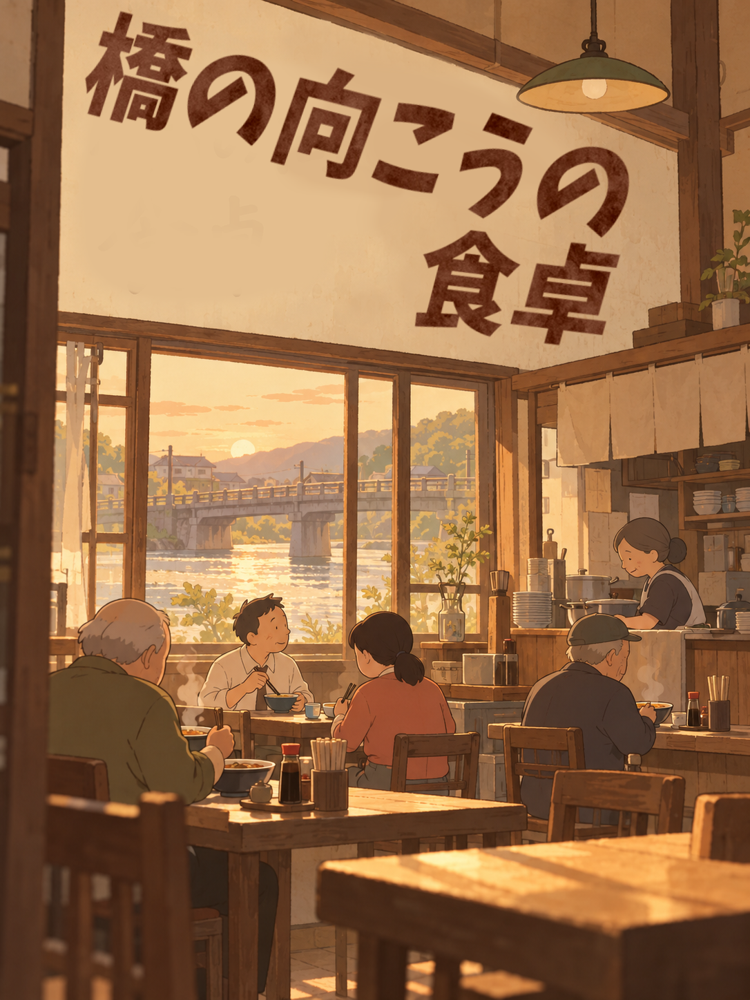
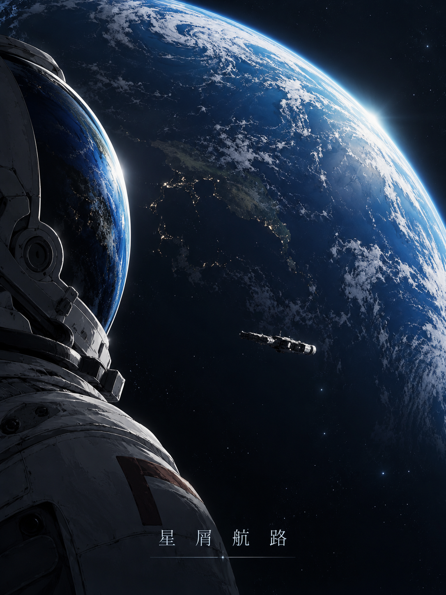
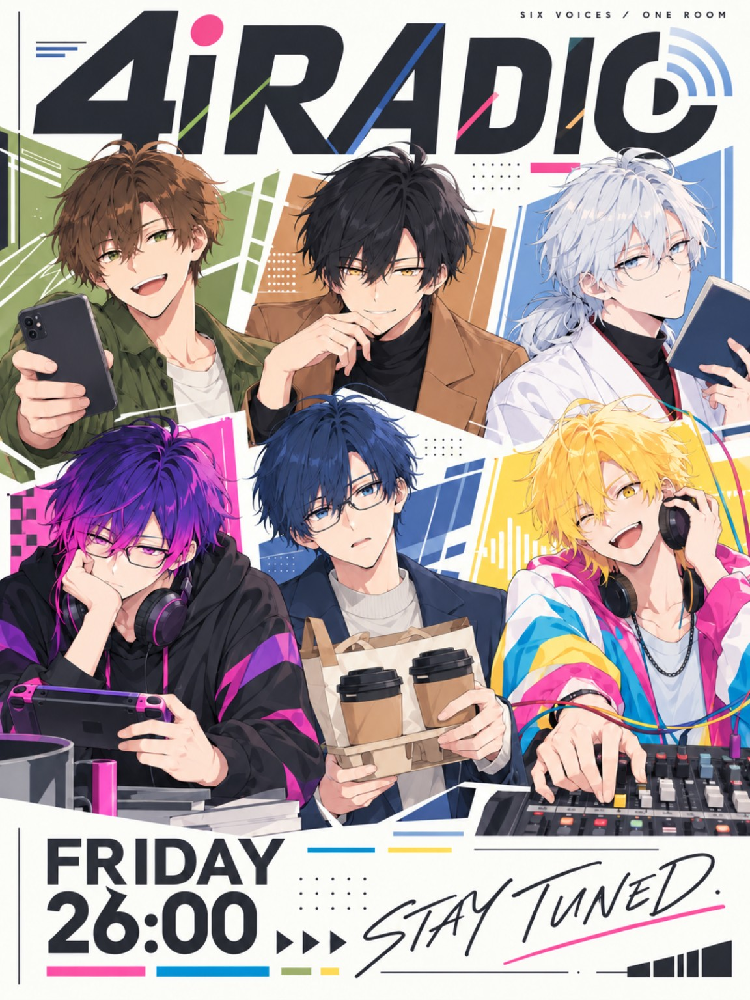

日常にある物語を、
誰かの暮らし。いつもの会話。その先を描く、アニメーションスタジオ。
01 / SELECTED WORKS

企画・アニメーション制作

制作協力

アニメーション制作 / 制作中
02 / OUR APPROACH
街で続く営みや、小さなコミュニティの会話。燈路は、現実の人や活動との出会いから、アニメーションの物語を考えます。
そのまま記録するのではなく、想像を重ねて。生活の手触りと、描くことの自由を大切にしています。
03 / NEWS
04 / STUDIO LIFE
仕事のこと、道具のこと。燈路の制作現場から。